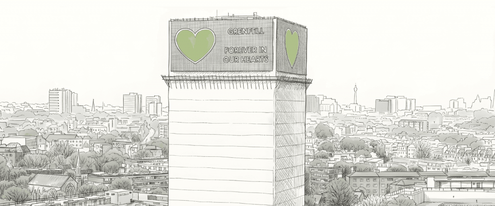

The Grenfell Tower fire occurred on June 14, 2017, in North Kensington, London, marking one of the most tragic events in recent British history. A fire broke out in the 24-story residential building and rapidly spread due to the flammable exterior cladding. The blaze raged for over 60 hours, resulting in the deaths of 72 people and injuring many others. Investigations revealed significant failures in social housing policy, fire safety regulations and building materials, with the state and cladding manufacturers bearing substantial responsibility for creating and perpetuating these social injustices.
The Grenfell Curriculum Project is a collaboration between the Grenfell community and education researchers which was started to ensure that the legacy of the Grenfell Tower fire is carried forward through meaningful, justice-centred education. Its purpose is to support schools in teaching about Grenfell with accuracy, sensitivity, and respect, while empowering young people to understand the social, ethical, and structural issues the disaster exposed.
In July 2025, we published Teaching about Grenfell: Recommendations from the community, a landmark report developed through two years of community-engaged research with bereaved families, survivors, young people, and local educators. This work established a shared framework for what teaching about Grenfell should include and why it matters.